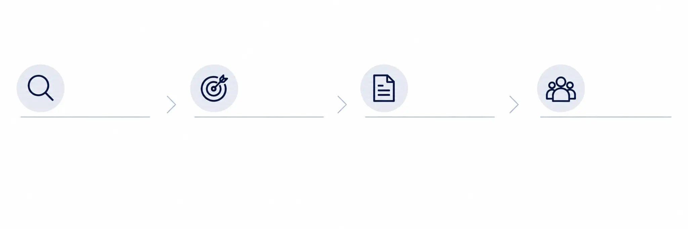

Healthcare Market Readiness
From Innovation
to U.S. Market
Readiness.
We help healthcare and health-technology companies translate innovation into a proposition that U.S. healthcare decision makers can understand, evaluate and act on.


01 Assess
- Market fit
- Competitive position
- Barriers and requirements
- Commercial assumptions
02 Position
- Clinical value
- Economic value
- Operational value
- U.S. messaging
03 Prepare
- Executive readiness
- Materials and data
- Evidence and validation
- ROI logic
04 Access
- Health systems
- Clinical leaders
- Strategic partners
- Decision-makers
The right introduction starts with the right preparation.